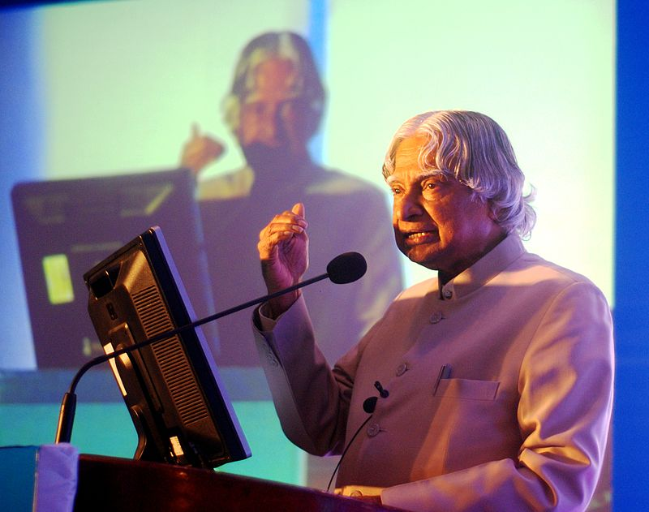

PRECIDENCY
Kalam served as the 11th President of India, succeeding K. R. Narayanan. He won the 2002 presidential election with an electoral vote of 922,884, surpassing the 107,366 votes won by Lakshmi Sahgal. His term lasted from 25 July 2002 to 25 July 2007. On 10 June 2002, the National Democratic Alliance (NDA) which was in power at the time, expressed that they would nominate Kalam for the post of President,and both the Samajwadi Party and the Nationalist Congress Party backed his candidacy.After the Samajwadi Party announced its support for Kalam, Narayanan chose not to seek a second term in office, leaving the field clear.Kalam said of the announcement of his candidature: I am really overwhelmed. Everywhere both in Internet and in other media, I have been asked for a message. I was thinking what message I can give to the people of the country at this juncture. On 18 June, Kalam filed his nomination papers in the Indian Parliament, accompanied by Vajpayee and his senior Cabinet colleagues. Kalam along with Vladimir Putin and Manmohan Singh during his presidency He was also the first scientist and the first bachelor to occupy Rashtrapati Bhawan
During his term as president, he was affectionately known as the People's President,saying that signing the Office of Profit Bill was the toughest decision he had taken during his tenure. Kalam was criticised for his inaction in deciding the fate of 20 out of the 21 mercy petitions submitted to him during his tenure.[57] Article 72 of the Constitution of India empowers the President of India to grant pardons, and suspend or commute the death sentence of convicts on death row.Kalam acted on only one mercy plea in his five-year tenure as president, rejecting the plea of rapist Dhananjoy Chatterjee, who was later hanged.Perhaps the most notable plea was from Afzal Guru, a Kashmiri terrorist who was convicted of conspiracy in the December 2001 attack on the Indian Parliament and was sentenced to death by the Supreme Court of India in 2004.While the sentence was scheduled to be carried out on 20 October 2006, the pending action on his mercy plea resulted in him remaining on death row.He also took the controversial decision to impose President's Rule in Bihar in 2005. In September 2003, in an interactive session in PGI Chandigarh, Kalam supported the need of Uniform Civil Code in India, keeping in view the population of the country. At the end of his term, on 20 June 2007, Kalam expressed his willingness to consider a second term in office provided there was certainty about his victory in the 2007 presidential election. However, two days later, he decided not to contest the Presidential election again stating that he wanted to avoid involving Rashtrapati Bhavan from any political processes.[65] He did not have the support of the left parties, Shiv Sena and UPA constituents, to receive a renewed mandate. Nearing the expiry of the term of the 12th President Pratibha Patil on 24 July 2012, media reports in April claimed that Kalam was likely to be nominated for his second term.After the reports, social networking sites witnessed a number of people supporting his candidature. The BJP potentially backed his nomination, saying that the party would lend their support if the Trinamool Congress, Samajwadi Party and Indian National Congress proposed him for the 2012 presidential election.A month ahead of the election, Mulayam Singh Yadav and Mamata Banerjee also expressed their support for Kalam.Days afterwards, Mulayam Singh Yadav backed out, leaving Mamata Banerjee as the solitary supporter.On 18 June 2012, Kalam declined to contest the 2012 presidential poll. He said of his decision not to do so: Many, many citizens have also expressed the same wish. It only reflects their love and affection for me and the aspiration of the people. I am really overwhelmed by this support. This being their wish, I respect it. I want to thank them for the trust they have in me.
